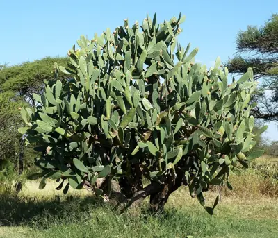

pranet · 出典付きの植物図鑑
オオガタホウケン
Opuntia ficus-indica (L.) Mill. · Cactaceae

Opuntia ficus-indica, the Indian fig opuntia, fig opuntia, or prickly pear, is a species of cactus that has long been a domesticated crop plant grown in agricultural economies throughout arid and semiarid parts of the world. O. ficus-indica is the most widespread and most commercially important cactus. It is grown primarily as a fruit crop, and also for the vegetable nopales and other uses. Cacti are good crops for dry areas because they efficiently convert water into biomass. O. ficus-indica is the most widespread of the long-domesticated cactuses. Opuntia species hybridize easily, but the wild origin of O. ficus-indica is likely to have been in central Mexico, where its closest genetic relatives are found.
出典: Wikipedia 英語版「Opuntia ficus-indica」 · CC BY-SA 4.0
異名: Cactus compressus Salisb., Cactus decumanus Willd., Cactus elongatus Willd., Cactus ficus Thunb., Cactus ficus-indica L., Cactus lanceolatus Haw., Cactus maximus Colla, Cactus opuntia L., Opuntia alfagayucca Karw. ex Salm-Dyck, Opuntia amyclaea Ten., Opuntia apurimacensis (F.Ritter) R.Crook & Mottram, Opuntia arkansana Engelm. ex Hirscht, Opuntia caespitosa Raf., Opuntia compressa J.F.Macbr., Opuntia cordobensis Speg., Opuntia crassa Haw., Opuntia decumana (Willd.) Haw., Opuntia elongata (Willd.) Haw., Opuntia ficus-barbarica A.Berger, Opuntia fusicaulis Griffiths
同定や利用は自己責任でお願いします。この図鑑だけを根拠に野生の植物を食べないでください。
出典
- 学名: World Flora Online Plant List 2026-06 · CC0 1.0
- 名前: Wikipedia の記事名と Wikidata · CC0 1.0（Wikidata）。記事名は事実
- 説明: Wikipedia 英語版「Opuntia ficus-indica」 · CC BY-SA 4.0
- 食用・毒性: World Checklist of Useful Plant Species (Diazgranados et al. 2020, RBG Kew) · CC BY 4.0
- 分布: World Checklist of Vascular Plants (WCVP), RBG Kew, version 2026-06-04 · CC BY 3.0
このページは pranet のデータから自動生成しています。コードは MIT、データは項目ごとのライセンス（説明）。